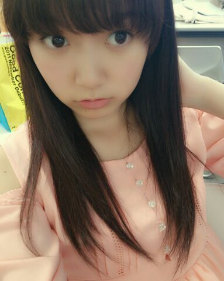

| 2013/05 15 Wed | ひめたん(*>ω<*)そ の296 |
わーみなさん(´;ω;｀)
なんてことだみなさん
なんて優しいんだみなさんん
たくさんのあたたかーいメッセージ
ありがとうございましたっ
もう、好きだ！好きだばーかっ
あは。なんでこんな荒ぶってんのかしらー
さて今日から
6thの製作期間が始まったんだけれども
ねー6thってなんて読むのー？しくすす？
って話を万理華れーかとしましたこの前。
とにかく6枚目の製作期間が
はーじまりましたけれども
プリンシパル落ち着いたと思ったら
2週間後テストなんですねー
え？この話にオチなんてないよ(´・ω・｀)
今日は生まれてはじめて
クロールで左から息継ぎした日！
さあ、質問返しいってみよう！
なんてことだみなさん
なんて優しいんだみなさんん
たくさんのあたたかーいメッセージ
ありがとうございましたっ
もう、好きだ！好きだばーかっ
あは。なんでこんな荒ぶってんのかしらー
さて今日から
6thの製作期間が始まったんだけれども
ねー6thってなんて読むのー？しくすす？
って話を万理華れーかとしましたこの前。
とにかく6枚目の製作期間が
はーじまりましたけれども
プリンシパル落ち着いたと思ったら
2週間後テストなんですねー
え？この話にオチなんてないよ(´・ω・｀)
今日は生まれてはじめて
クロールで左から息継ぎした日！
さあ、質問返しいってみよう！

 この前の乃木どこで嘘の暴露やってたけど
この前の乃木どこで嘘の暴露やってたけど
ひめたんには今だから言える嘘！
みたいなのある？？
ひみつー(〃ω〃)うふ
家族団らんで
どこか見に行ったりしたのかな？
家族全員そろってよかったやん＾＾
久々だったのかな？
skyバスでお花見しました( ^ω^ )
平和なふぁみりーしょー♪みんな仲良いのー
もしかして、新潟初上陸かな？
ういっ！初新潟でしたお邪魔しました！
楽しかったよー♪
プライベートでもぜひ行きたいーっ
東京からも近いなあって印象！
乃木どことか観てて歌うまいなあって
いつも思ってるんだけど
なんかボイトレとかしてる??
ありがとうう(´;ω;｀)わー嬉しいっ
まあ時と場合によりけりだけど、今は
定期的にはしてないかなー
乃木坂入る前にスクール通ってたんだけども
そこで鍛えていただきました＊感謝っ
自炊するのかな？
基本しなーい( ^ω^ )るん
ひめたんがモチベーション維持で
やっている事は？
音楽を聴く、ブログのコメント読む、
あとはなんか、お昼寝してみるとか
メンバーにmailとかしてだる絡みしてみたり
豆乳飲んだりとかそーゆーことです。
ひめたんがいわれて
一番うれしい言葉はなんですか
ふへ。考えてたら恥ずかしくなってきたー
誉めてもらうのはすきよ(ω)お世辞は嫌い←
言葉のチョイスはおまかせしちゃう。
JRでカープ列車が走っているのは、
知っていますか？
えー知らん知らんよーまじかー
見てみたいなー広島人の方どなたか
写め頼んだ(｀・ω・´)！
ひめたんは大人になっても、
広島弁を使い続けてくれますか？
もちろんよー広島人だものー
じもてぃーさんは握手会とかの機会には
ぜひ方言丸出しでよろしくね。
ひめたんが喜ぶからねー∩^ω^∩
走バイ全握いったけど覚えてる？
覚えてると思う！
でも今度お会いできる機会があったら
3rd全握行ったよーてワンクッションあると
ひめたは心からありがとうございますって言う
と思われる♪

あーえっとえっとえっと
この服、この前の個握で着てた服。
E hyphen のお洋服よ(ω)
ポーズのテーマは ずばり 謎！
謎ほーんと謎。だから触れない方向で。
ちなみに今回の公演は
全員ストレートだったのよー♪
あっ
4月の握手会の時のお手紙やプレゼント
受け取りました！ありがとうー
ひめたは感動したよー♪
(＊´・ω・＊)
コメント(235)
2013/05/15 00:42